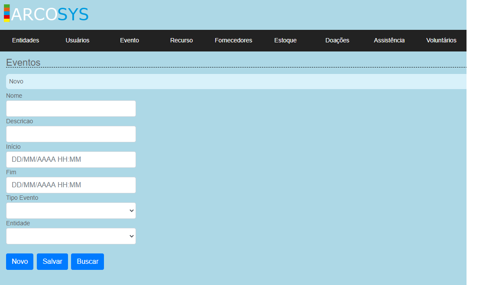

Evento
No sistema da ARCOS, a aba de Eventos é usada para o cadastro dos possíveis eventos que as entidades poderão realizar. E é vinculada com a aba de Entidades, já que para realizar o cadastro dos eventos é necessário selecionar a Entidade responsável pelo mesmo.
Nas telas de Evento, é possível cadastrar um novo evento, um novo tipo de eventos, buscar os eventos já cadastrados e os tipos de eventos existentes.
Tutorial
1- Nessa primeira tela, é onde faz o cadastro dos eventos. Onde é necessário informar o nome, a descrição, a data e hora de início e fim do evento, selecionar o tipo de vento que será realizado e a Entidade responsável pelo evento. Após preencher os campos, clique no botão "Salvar"
2- Caso o tipo de evento à ser realizado não apareça, é necessário cadastra-lo. Para fazer isto, clique em eventos e selecione "Tipo Evento", como mostra na imagem.
Após clicar em tipo eventos, irá abrir outra tela, que é responsável pelo cadastro dos tipos. Para efetuar o cadastro, é necessário informar o tipo (ex: um jantar), e uma descrição para esse evento. Logo em seguida, clicar no botão "Salvar".
3- Para verificar se o "Evento" já está cadastrado, vá para a tela de "Eventos", e clique no botão "Buscar", feito isso irá abrir outra tela, nessa tela digite o nome do evento para verificar se o mesmo já está cadastrado, ou clique diretamente no botão "Buscar", para ver os eventos cadastrados e que ainda estão ativos.
Módulos Relacionados